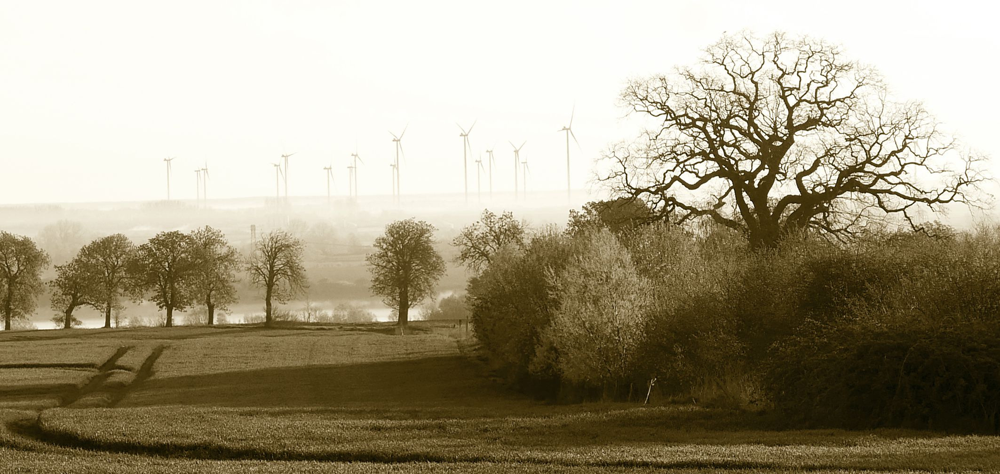
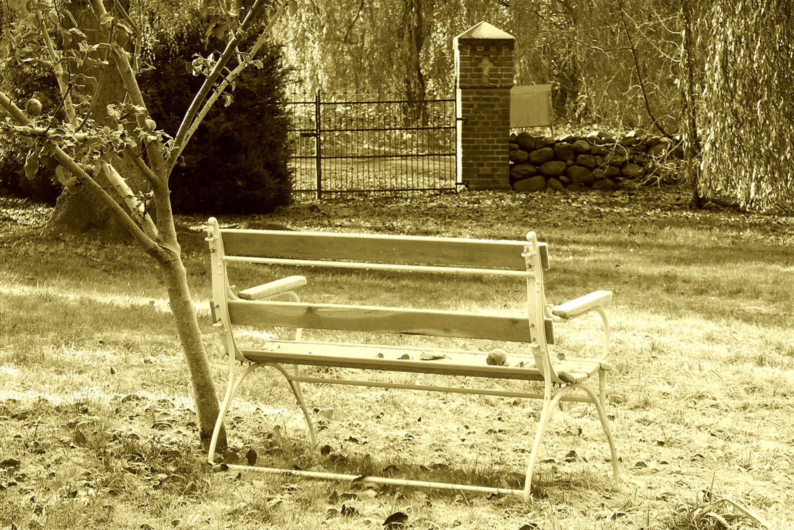

Heimat

Vorpommern. Heimat mit Zukunft!
„Wir stehen zu unserer Heimat. Unser Landkreis, unsere Städte und Gemeinden haben sich in den vergangenen Jahren gut entwickelt.“
Das verkündet die CDU Vorpommern-Greifswald unter ihrem neuen Logo „MV mit Vernunft“. Aber bei den Schwerpunkten ihrer kommunalpolitischen Arbeit für die kommenden fünf Jahre fehlt jeglicher Hinweis auf eine Verbesserung unserer natürlichen Lebensgrundlagen.
Ja, was für eine Zukunft soll die Heimat unserer Enkel werden?
In Zeiten von Klimawandel und Artensterben sagt die Bundesumweltministerin Svenja Schulze: „Kein Land der Welt kann das Klima im Alleingang retten. Aber zum Glück ist auch niemand alleine. Denn auf der ganzen Welt gehen Staaten, Unternehmen, Gesellschaften voran. Und auf der ganzen Welt erwarten nicht nur junge Menschen von der Politik, dass sie beim Klimaschutz ernst macht...“ Aber wie soll das denn bitteschön funktionieren? Schon die 25. Weltklimakonferenz findet im Dezember statt. Doch was nutzt das alles, wenn auf unterer Ebene die deutsche Regierungspartei CDU es überhaupt nicht für nötig hält, sich mit der Problematik zu befassen und vielleicht noch wirklich etwas dafür Sinnvolles zu tun? Der Weltbiodiversitätsrat hat am 6. Mai seinen Globalen Bericht zum Zustand der Natur vorgestellt. Die Botschaft des Berichts ist eindeutig: Der Zustand der Natur verschlechtert sich dramatisch. Bis zu eine Million Arten sind vom Aussterben bedroht... „Die Menschheit sägt an dem Ast, auf dem sie sitzt. Die Natur ist in einem immer schlechteren Zustand. Die Menschen sind dabei, ihre eigenen Lebensgrundlagen zu zerstören. Die Herausforderungen beim Artensterben sind ähnlich groß wie beim Klimawandel.“ erkannte die Bundesumweltministerin. Bundesforschungsministerin Anja Karliczek: „Der Bericht des Weltbiodiversitätsrats ist ein klares Signal an die Menschheit, umzudenken und die Artenvielfalt zu schützen. Der Bericht stellt den weltweit akzeptierten Sachstand zum Zustand der Natur dar: Vertreter aus 132 Mitgliedstaaten nahmen vom 29.04.-04.05.2019 an den Beratungen des Weltbiodiversitätsrats in Paris teil. Die biologische Vielfalt und die Leistungen von Ökosystemen wie Nahrung, sauberes Wasser und Medizin sind für das Überleben der Menschheit essenziell. Dennoch verschlechtert sich ihr Zustand dramatisch: Das Artensterben ist heute mindestens Dutzende bis Hunderte Male größer als im Durchschnitt der vergangenen zehn Millionen Jahre... Es ist aber noch keine 30 Jahre her, da fusionierte die Blockpartei CDU mit den Funktionären der DBD, der Demokratischen Bauernpartei Deutschlands. 100.000 neue Mitglieder sollten helfen, die erste demokratische Wahl zu gewinnen. Den ehemaligen LPG-Bauern hat das wenig genutzt. Die meisten haben die CDU später schnell wieder verlassen. Diesen Teil ihrer Geschichte verschweigt die neue CDU-Präsenz vorpommernpartei.de.
Ebenso sucht man vergebens auf der Seite des Landkreises VG die gewaltigen Schweinefabriken in Medow und Alt Tellin. Doch CDU-Politik in Vorpommern bleibt massive Agrar-Politik! Auf Kosten der Natur, der Einwohner, der Welt und der Zukunft! Die Agrarindustrie in ihrer sogenannten konventionellen Form ist erwiesenermaßen ein Hauptverursacher der oben benannten Probleme. Gift und Gülle haben Nebenwirkungen. Richtig irre wird es aber, wenn die CDU-regierten Gemeinden auf einmal Natur als ein von Windkraft bedrohtes Gut benennen. Am 28.2. hat die Gemeinde Alt Tellin umfangreiche Baumschnittarbeiten beschlossen. Ab nächsten Tag galt Schnittverbot nach Bundesnaturschutzgesetz. Am 7.5. berichtete der Bürgermeister auf der GV-Sitzung zur Verweigerung eines Windeignungsgebietes: Sämtliche Schnittarbeiten sind abgeschlossen.
„Arbeiten und Wirtschaften in freier Natur“ will Werner Kuhn in Europa ohne Wettbewerbsverzerrungen für die CDU durchsetzen.
„Freie Natur“ hat so hier weder Heimat noch Zukunft.
OS
Tollensetaler Stimme 2019/5, S. 14

Von hier nach dort
Eine Bank steht neu an diesem Ort.
Kirche, Wiese, alte Gräber.
Dort verweilen, wo alles endet?
Sie steht hier und blickt nach dort.
Zum Apfelbäumchen.
Noch gern gepflanzt, auch wenn die Welt bald unterging.
Zur Trauerweide.
Groß und stark und melancholisch ohne Grund.
Wer Platz nimmt, kann mehr sehen. Etwas von gestern, Eingelöstes und Verpasstes.
Etwas von morgen, einen neuen Himmel vielleicht.
Ein Ort, um Abschied auszuhalten.
christian